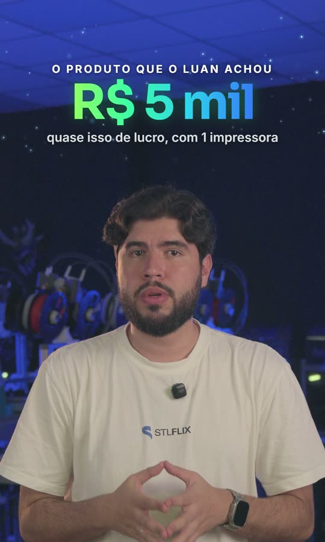

Edite a VSL. O Claude cuida do repetitivo.
Este kit junta você, o FilmCraft e um assistente, o Claude. Você continua editando como sempre. O Claude escreve tudo o que foi falado no vídeo, cria os letterings animados da STLFLIX (os motions) a partir do que você planejar e coloca cada um no segundo certo da timeline.
Você edita
Decupagem, ritmo e escolha dos takes continuam com você, no FilmCraft.
O Claude faz o repetitivo
Transcrever, desenhar dezenas de motions e encaixar cada um no tempo da fala.
Nada muda sem você aprovar
Antes de mexer na timeline, ele mostra o que vai fazer e espera o seu “pode”.
Andamento da VSL
O que já está pronto na VSL escolhida e o que fazer agora. Para trocar de VSL, use o menu no topo. Para atualizar esta página, peça ao Claude: “Abre o painel”.
Como conversar com o Claude
O Claude Code é uma janela de conversa, como um chat. Você escreve o que precisa em português, do seu jeito, e ele faz no seu computador: abre o FilmCraft, lê as pastas, coloca os motions. Não precisa saber programar nem decorar comandos.
C:\STLFLIX_EDITOR. É ali que ele encontra as instruções e a lista das suas VSLs.Do roteiro à entrega, passo a passo
Uma VSL passa por 7 etapas. Em cada uma, veja quem faz, o que acontece e o que pedir ao Claude.
Criar a VSL juntos
Cada VSL ganha uma pasta própria, onde ficam o roteiro, o plano e tudo o que for gerado. O Claude cria a pasta e pergunta o que precisa: onde está o projeto do FilmCraft e como se chamam as sequências (por exemplo, “Corpo decupado” e “Lead A”).
O roteiro do teleprompter em .txt e o projeto já salvo no FilmCraft.
Decupar você
A edição da fala é sua, no FilmCraft, como você já faz: escolher os takes, tirar pausas e tropeços, ajustar os cortes. O guia de estilo do time está em 5-guias/estilo-de-edicao.md.
As sequências decupadas (corpo e leads), salvas no projeto.
Se o Claude for ajudar depois, mantenha os nomes das sequências iguais aos que você passou no passo 1.
Transcrever Claude
O Claude “ouve” a sequência e escreve tudo o que foi falado, com o minuto e o segundo de cada frase, separado pelos blocos do roteiro. Com placa NVIDIA, leva cerca de 1 minuto para cada 10 minutos de vídeo; sem ela, bem mais. Ele também avisa se encontrar trecho sem áudio ou palavra repetida que escapou na decupagem.
Um documento com a fala dividida por blocos, para você ler e escrever o plano de cenas.
Escrever o plano de cenas você
Aqui entra o olhar de editor: com a transcrição e a copy na mão, você decide onde cada motion aparece e o que ele mostra. É um arquivo de texto simples, explicado logo abaixo, em O plano de cenas. O Claude pode sugerir ideias e conferir se está tudo no formato certo, mas quem decide é você.
O plano-de-cenas.md da VSL, com todos os motions.
Criar os motions Claude
O Claude transforma cada cena do plano num vídeo com fundo transparente, já no visual da STLFLIX e na posição certa do quadro (acima da cabeça do apresentador). Primeiro ele faz 2 ou 3 para você ver como ficou; só depois faz todos. Cada motion leva uns 30 segundos.
Um arquivo .mov por cena (B05A, B05B…) e um vídeo de prévia com os motions sobre o apresentador.
Pôr na timeline Claude + você revisa
O Claude procura na transcrição o momento em que cada frase-gatilho é falada e coloca o motion ali, na trilha V2. Antes, ele mostra a lista com o tempo de cada um e o que ficou de fora. Ele também pode acertar o enquadramento dos takes da câmera (escala e posição) de uma vez.
Aprova, assiste na timeline, ajusta o que quiser e salva com Ctrl+S.
Conferir e entregar juntos
Antes de exportar, o Claude confere o que já deu problema em outras VSLs: vídeo do Drive que sai preto, trilha desligada, áudio só de um lado ou faltando. Depois que você exporta, ele manda os arquivos XML das sequências para a pasta do Drive.
Exporta o vídeo no FilmCraft, depois que a conferência não achar nenhum erro.
O plano de cenas, explicado
É a parte mais importante do seu trabalho no kit. Para cada motion, você escreve três coisas: um código, a frase em que ele deve aparecer e o que aparece na tela. O Claude faz o resto.
B05H): bloco 5, cena H. Vira o nome do arquivo do motion. Cada cena tem um código diferente.duração: 7 segundos) e, na linha que começa com >, as peças separadas por |, de cima para baixo. Aqui: uma linha pequena em cima (kicker), um número grande verde que conta até R$ 5 mil, e uma legenda. O 0.3 quer dizer que tudo isso entra 0,3 s depois do início.> (por exemplo > 3.5 | frase: …): cada linha substitui a anterior naquele segundo.
Como o Claude sabe onde colocar cada motion?
Pela frase-gatilho. É por isso que ela precisa vir da transcrição, e não do roteiro: o que vale é o que o apresentador realmente falou.
Todos os tipos de peça (título, número, ícones, logo, botão de CTA…) e as boas práticas estão em 5-guias/plano-de-cenas.md. Cada VSL nova já vem com um plano de exemplo completo na pasta 04-plano-de-cenas.
A pasta da VSL
Cada VSL tem a sua pasta, onde você quiser no computador (por exemplo, junto do projeto do FilmCraft). Tudo o que o kit gera para ela fica lá dentro. Algumas partes você preenche; outras o kit cria sozinho.
teleprompter.txt), com os blocos marcados assim: --- BLOCO 5 · Título ---referencia.png), usado na prévia dos motions.Palavras que você vai ver
O kit usa alguns termos que talvez sejam novos.
C:\STLFLIX_EDITOR: instruções, ferramentas e o visual da STLFLIX que o Claude usa. As suas VSLs ficam fora dela.Dúvidas comuns
Preciso saber programar?
Não. Você conversa em português. Os comandos que aparecem no kit são para o Claude; você não precisa decorar nenhum.
O Claude pode estragar o meu projeto?
Ele sempre mostra o que vai mudar e espera você aprovar. Antes de apagar ou refazer algo, ele duplica a sequência como backup. E nada fica gravado no arquivo do projeto até você salvar com Ctrl+S. Se não gostar do resultado, diga o que está errado e peça para ele voltar como estava.
Posso editar enquanto o Claude trabalha?
Na timeline que ele está mexendo, não: espere ele terminar. Se precisar trabalhar em outro projeto, avise (“calma, estou em outro projeto”) e ele para.
O motion entrou no lugar errado. E agora?
Quase sempre é porque a frase-gatilho aparece duas vezes no vídeo, ou foi copiada do roteiro em vez da transcrição. Ajuste a frase no plano e peça para colocar de novo. Você também pode só arrastar o motion na timeline.
Quero mudar o texto de um motion.
Mude no plano de cenas e peça: “refaz o motion B05H”. Ele cria só aquele de novo.
Algo deu errado e não sei o que é.
Conte ao Claude o que você viu, do seu jeito: “a exportação saiu preta”, “o áudio está só de um lado”, “os motions não aparecem”. Os problemas que já aconteceram no time estão documentados no kit, e ele sabe resolver.
Onde ficam os meus arquivos?
Cada VSL fica na pasta que você escolheu ao criar (o painel mostra o caminho de cada uma). Motions, transcrições e exportações vão para dentro dela. Prefira um disco do computador, não o Drive: os renders ficam mais rápidos. Os vídeos pesados (brutos e B-rolls) podem continuar no Drive. Atualizar o kit (“atualiza o kit”) não mexe nas suas VSLs. Recebeu a pasta de uma VSL de outro editor? Peça: “Anota a VSL que está nesta pasta” e diga o caminho.